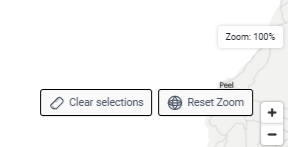
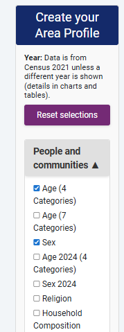
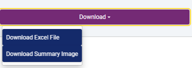

How to use Custom Area Profiles
Step 1 – Select an area
First
Select either Super Data Zones (SDZ), Data Zones (DZ), District Electoral Area (DEA) or Local Government District (LGD) as your chosen geography
Then
Select as many individual geographies as you want from the map
OrSelect areas using the radius selector
OrEnter a postcode in the postcode search box
Individual map selections, radius selector and postcode searches can be combined
Step 2 - View your profile
Once you have selected your area, click “Go to area profile” to generate outputs based on your selection
Select the statistics you are interested in using the Statistic selector. These will be aggregated for the areas in your selected profile.
You can explore different views of your profile:
- Chart view - A chart for each statistic, broken down by its sub-categories
- Table view - A table for each statistic, broken down by its sub-categories
All views include comparison to Northern Ireland (NI) as a default. An .xlsx download of the table data is available as is a snapshot image of any view of your area profile.
Which datasets are available?
Loading SDZ datasets...
Loading DZ datasets...
Loading DEA datasets...
Functionality Overview
Custom Area Profiles has been designed to support interactive selection, profile generation, and comparison of demographic, social, and economic data across Northern Ireland. Below are the key functions of the dashboard.
1. Map Interface and Selection Controls
The main map interface enables users to define custom areas using the following tools:
- Geography selector (left panel): Allows switching between Super Data Zones (SDZ), Data Zones (DZ), District Electoral Areas (DEA) and Local Government Districts (LGD) for area selection.
- Individual area selector (left panel): Enables users to select individual areas for profile generation.
- Radius selector (left panel): Enables users to group zones within a defined radius from a selected central position. Default radius is 2 km.
- Postcode search (left panel): Allows users to search for specific areas by postcode. To find out more about the postcode area use postcode finder
- Go to Area Profile button: Generates a starter profile for the selected zones and transitions to the output view.
- Selection by LGD Using the Local Government Districts (LGD) selector will provide an overlay of the selected district.

- Map controls:
- Clear all current selections.
- Reset the map zoom and position to default to the full Northern Ireland view.
- Zoom in and out using the arrow keys. Zoom level is indicated by a percentage.

2. Profile Outputs and Data Views
Upon generating a profile, users are presented with a range of configurable views and controls:
- Dataset selector (left panel): Enables filtering by domain, including Demography, Education, Economy, and Health.
- Tick or untick the selection of datasets. Reset selections to clear all ticks

- Chart View: Displays data distributions as percentage bar charts.
- Table View: Tabulates raw counts and percentage values for each dataset.
3. Export and Download Options
The dashboard includes export functionality for further analysis and reporting:
- Excel export: Downloads all currently selected and aggregated data as an Excel file.
- Summary image download: Allows saving a PNG version of the active view (charts or tables) and the profile summary.

4. Data Source Transparency
All datasets presented in the dashboard are accompanied by source links. These can be accessed by clicking the i button beside the title of each chart and direct users to the relevant Census or NISRA data sources for reference, metadata, and further documentation.